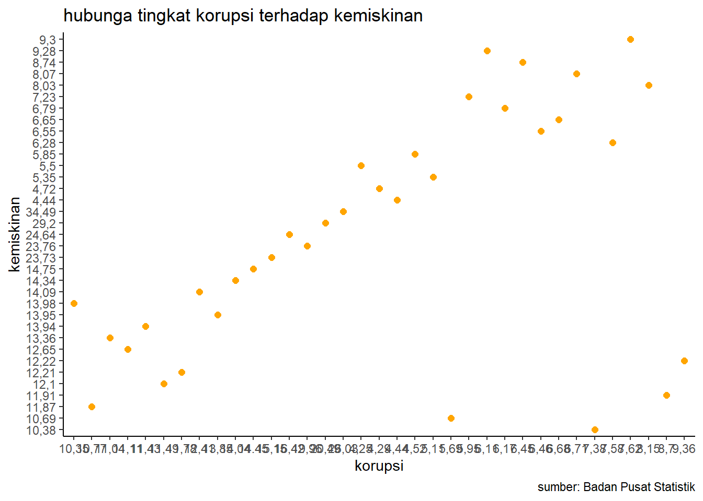
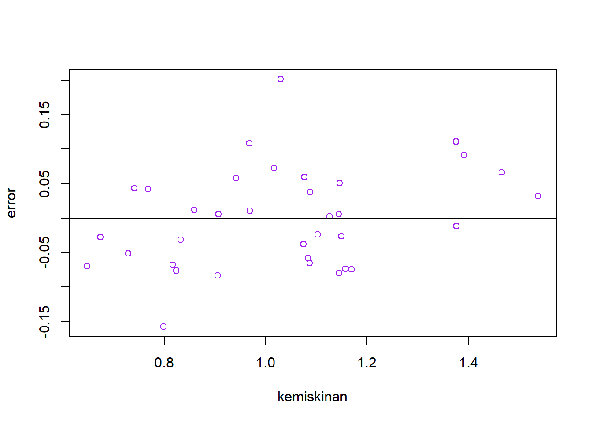
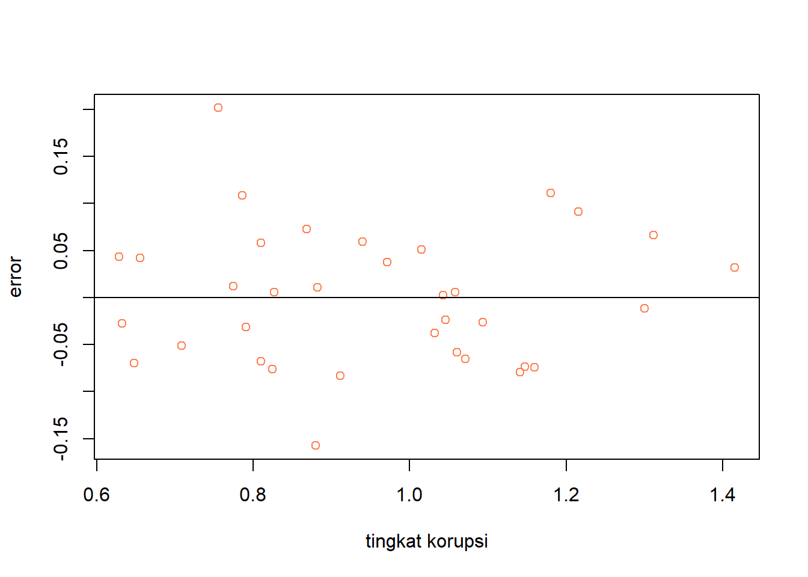

library(tidyverse)
library(readxl)
library(writexl)
library(dplyr)Pengaruh Tingkat Korupsi terhadap Kemiskinan di Indonesia
Metode Penelitian Politeknik APP Jakarta

1 Pendahuluan
1.1 Latar belakang
Salah satu masalah sosial yang menjadi tantangan bangsa Indonesia hingga saat ini adalah kemiskinan. Kemiskinan sendiri bisa disebabkan oleh berbagai faktor, baik internal maupun eksternal, yang berkaitan dengan kondisi ekonomi, sosial, politik, dan budaya. Salah satu contoh faktor eksternal yang menjadi penyebab kemiskinan adalah tindakan korupsi.
Korupsi terjadi ketika individu atau kelompok melakukan penyalahgunaan wewenang untuk kepentingan pribadi maupun kelompoknya sehingga merugikan kepentingan bersama. Beberapa dampak buruk korupsi, seperti kerugian negara, pembangunan terhambat, demokrasi melemah, dan kualitas pelayanan public menurun. Selain itu, korupsi juga bisa memperlebar kesenjangan sosial dan ekonomi, serta menghambat upaya pengentasan kemiskinan.
Indonesia menjadi salah satu negara dengan tingkat korupsi tertinggi. Indonesia menempati posisi ke-110 dari 180 negara dengan skor sebesar 34 dari 100 poin. Skor tersebut menunjukkan bahwa persepsi korupsi di Indonesia semakin memburuk. Selama tahun 2022, di Indonesia telah terjadi kasus korupsi setidaknya 579 kasus dengan jumlah tersangka sebanyak 1.396 orang.
Dari latar belakang di atas, penelitian yang dilakukan peneliti saat ini diharapkan dapat memberi kontribusi bagi pengembangan ilmu pengetahuan, khususnya dalam bidang ekonomi dan sosial, serta memberikan masukan bagi pemerintah dan masyarakat dalam upaya pemberantasan korupsi dan kemiskinan di Indonesia.
1.2 Ruang lingkup
Penelitian ini menguji apakah korupsi mempegaruhi kemiskinan di Indonesia dan hubungan tingkat korupsi dan kemiskinan di Indonesia. Data yang digunakan bersumber dari dari Badan Pusat Statistik (BPS) pada tahun 2022. Objek dari penelitian ini sendiri terdiri dari dua variabel, yaitu variabel x berupa tingkat korupsi dan variabel y berupa kemiskinan.
1.3 Rumusan masalah
Apakah tingkat korupsi mempengaruhi kemiskinan di Indonesia ?
Bagaimana hubungan tingkat korupsi dan kemiskinan di Indonesia ?
1.4 Tujuan dan manfaat penelitian
Tujuan penelitian ini untuk mengetahui seberapa besar tingkat korupsi dapat mempengaruhi kemiskinan yang terjadi di Indonesia serta hubungan yang terjadi di antara keduanya. Manfaat dari penelitian ini sendiri untuk memberi gambaran kepada pemerintah dan juga masyarakat dalam rangka membantu upaya pemberantasan korupsi dan kemiskinan di Indonesia.
1.5 Package
Packages yang digunakan antara lain sebagai berikut:
2 Studi pustaka
Korupsi
Korupsi merupakan kegiatan pelanggaran hokum yang dapat berupa penggelapan, penyuapan, penipuan, pemerasan, kolusi, nepotisme, dan lain-lain. Korupsi dapat melibatkan individu maupun kelompok dalam suatu jabatan kekuasaan untuk memperoleh keuntungan yang haram atau untuk memperoleh keuntungan pribadi. Beberapa dampak buruk perilaku korupsi adalah kerugian keuangan dan perekonomian negara, terhambatnya pertumbuhan ekonomi, investasi, perdagangan, dan kompetivitas, melemahnya demokrasi hukum, dan tata kelola pemerintahan, serta menurunkan kualitas pelayanan publik.
Dalam pemberantasannya maka diperlukan kerja sama dari berbagai pihak mulai dari pemerintah hingga masyarakat. Beberapa cara yang dapat dilakukan dalam membantu pemberantasan korupsi adalah meningkatkan pendidikan dan kesadaran masyarakat, meningkatkan kapasitas dan kemandirian lembag penegak hukum, meningkatkan transparansi dan akuntabilitas pemerintah, swasta, dan masyarakat, serta meningkatkan efektivitas dan efisiensi pengelolaan keuangan negara dan perekonomian negara.
Kemiskinan
Kemiskinan merupakan kondisi di mana seseorang tidak dapan memenuhi kebutuhan primernya. Salah satu penyebab kemiskinan adalah korupsi yang dilakukan oleh pihak yang memiliki kekuasaan dan wewenang. Berbagai dampak negatif dari kemiskinan bisa terjadi dalam berbagai bidang, baik kesehatan, pendidikan, pembangunan, dan masih banyak lagi. Kemiskinan yang terjadi dapat menyebabkan berbagai kerugian untuk sebuah negara. Salah satu kerugian yang terjadi akibat adanya korupsi adalah sumber daya manusia yang rendah. Dengan tinggi angka kemiskinan yang terjadi, maka bisa saja sumber daya manusia akan semakin rendah. Oleh karena itu, maka diperlukan tindakan cepat dalam menanggulangi kemiskinan dalam suatu negara.
3 Metode penelitian
3.1 Data
| Provinsi | korp | kms | x | y | |
|---|---|---|---|---|---|
| 1 | Aceh | 14,45 | 14,75 | 1,159867847 | 1,16879202 |
| 2 | Sumatera Utara | 8,15 | 8,03 | 0,911157609 | 0,904715545 |
| 3 | Sumatera Barat | 5,95 | 7,23 | 0,774516966 | 0,859138297 |
| 4 | Riau | 6,68 | 6,65 | 0,824776462 | 0,822821645 |
| 5 | Jambi | 7,58 | 6,28 | 0,879669206 | 0,797959644 |
| 6 | Sumatera Selatan | 11,78 | 12,21 | 1,07114529 | 1,086715664 |
| 7 | Bengkulu | 14,04 | 14,34 | 1,147367108 | 1,156549151 |
| 8 | Lampung | 11,11 | 12,65 | 1,045714059 | 1,102090526 |
| 9 | Kep. Bangka Belitung | 4,52 | 5,85 | 0,655138435 | 0,767155866 |
| 10 | Kep. Riau | 5,69 | 10,69 | 0,755112266 | 1,028977705 |
| 11 | DKI Jakarta | 4,44 | 4,44 | 0,64738297 | 0,64738297 |
| 12 | Jawa Barat | 7,62 | 9,3 | 0,881954971 | 0,968482949 |
| 13 | Jawa Tengah | 10,77 | 11,87 | 1,032215703 | 1,074450719 |
| 14 | DI Yogyakarta | 11,04 | 13,36 | 1,042969073 | 1,125806458 |
| 15 | Jawa Timur | 10,35 | 13,98 | 1,01494035 | 1,145507171 |
| 16 | Banten | 6,17 | 6,79 | 0,790285164 | 0,831869774 |
| 17 | Bali | 4,25 | 5,5 | 0,62838893 | 0,740362689 |
| 18 | Nusa Tenggara Barat | 13,85 | 13,95 | 1,141449773 | 1,144574208 |
| 19 | Nusa Tenggara Timur | 19,96 | 23,76 | 1,300160537 | 1,375846436 |
| 20 | Kalimantan Barat | 6,71 | 8,07 | 0,82672252 | 0,906873535 |
| 21 | Kalimantan Tengah | 5,11 | 5,35 | 0,7084209 | 0,728353782 |
| 22 | Kalimantan Selatan | 4,29 | 4,72 | 0,632457292 | 0,673941999 |
| 23 | Kalimantan Timur | 6,11 | 9,28 | 0,78604121 | 0,967547976 |
| 24 | Kalimantan Utara | 6,45 | 8,74 | 0,809559715 | 0,941511433 |
| 25 | Sulawesi Utara | 7,38 | 10,38 | 0,868056362 | 1,016197354 |
| 26 | Sulawesi Tengah | 12,41 | 14,09 | 1,093771781 | 1,148910993 |
| 27 | Sulawesi Selatan | 8,7 | 11,91 | 0,939519253 | 1,075911761 |
| 28 | Sulawesi Tenggara | 11,43 | 13,94 | 1,05804623 | 1,144262774 |
| 29 | Gorontalo | 15,15 | 23,73 | 1,180412633 | 1,375297738 |
| 30 | Sulawesi Barat | 11,49 | 12,1 | 1,060320029 | 1,08278537 |
| 31 | Maluku | 16,42 | 24,64 | 1,215373153 | 1,391640703 |
| 32 | Maluku Utara | 6,46 | 6,55 | 0,810232518 | 0,8162413 |
| 33 | Papua Barat | 20,49 | 29,2 | 1,311541958 | 1,465382851 |
| 34 | Papua | 26,03 | 34,49 | 1,415474168 | 1,537693194 |
Data diambil dari Badan Pusat Statistik Indonesia tahun 2022 dalam satuan persen. Kemudian peneliti mengolah data dengan melakukan log pada kedua data dan menghasilkan objek data berupa y dari data tingkat kemiskinan (kms), dan x dari data tingkat korupsi(korp). Data yang telah diolah yang akan digunakan sebagai objek dalam penelitian ini.
#import dataset
library(readxl)
korp<-read_excel('korp.xlsx')
head(korp)# A tibble: 6 × 5
Provinsi x y logx logy
<chr> <chr> <chr> <dbl> <dbl>
1 Aceh 14.45 14,75 1.16 1.17
2 Sumatera Utara 8,15 8,03 0.911 0.905
3 Sumatera Barat 5,95 7,23 0.775 0.859
4 Riau 6,68 6,65 0.825 0.823
5 Jambi 7,58 6,28 0.880 0.798
6 Sumatera Selatan 11,78 12,21 1.07 1.09 library("ggplot2")
library("readxl")
library("dplyr")
ggplot(data=korp,aes(x=x,y=y))+
geom_point(color="orange",size=2)+
labs(title="hubunga tingkat korupsi terhadap kemiskinan",
x="korupsi",
y="kemiskinan",
caption = "sumber: Badan Pusat Statistik")+
theme_classic()
3.2 Metode analisis
Dalam penelitian ini peneliti menggunakan metode regresi univariat atau Ordinary Least Square (OLS) dengan 1 variabel independen. Penelitian ini dimaksudkan untuk mengetahui seberapa besar pengaruh Tingkat korupsi terhadap kemiskinan di Indonesia. Spesifikasi yang dilakukan sebagai berikut:
\[ y_{t}=\beta_0 + \beta_1 x_t+\mu_t \] di mana \(y_t\) adalah kemiskinan dan \(x_t\) adalah tingkat korupsi.
4 Pembahasan
4.1 Pembahasan masalah
Hasil
| Coefficients | Estimate | Pr |
|---|---|---|
| Intercept | 0.05201 | 0.388 |
| x | 1.02687 | <2e-16 |
Kemudian peneliti memasukkan output di atas ke dalam rumus persamaan sehingga:
\[ y_{t}=\ 0.05201 + \ 1.02687x_t+\mu_t \]
Maka dapat diketahui bahwa untuk setiap kenaikan satu unit x, y akan meningkat sebesar 1.02687, hal ini dapat dilihat dari koefisien x sebesar 1.02687. Koefisien regresi untuk x juga sangat signifikan secara statistik, yang berarti bahwa ada hubungan yang kuat antara x dan y. Untuk koefisien intercept sebesar 0.05201, yang berarti jika x bernilai nol, y akan bernilai 0.05201. Namun, koefisien ini tidak signifikan secara statistik pada tingkat 0.05
4.2 Analisis masalah
Hasil regresinya adalah
library(readxl)
korp<-read_excel("korp.xlsx")
reg<-lm(logy~logx,data=korp)
summary(reg)
Call:
lm(formula = logy ~ logx, data = korp)
Residuals:
Min 1Q Median 3Q Max
-0.157351 -0.061623 0.002809 0.047187 0.201570
Coefficients:
Estimate Std. Error t value Pr(>|t|)
(Intercept) 0.05201 0.05942 0.875 0.388
logx 1.02687 0.06091 16.858 <2e-16 ***
---
Signif. codes: 0 '***' 0.001 '**' 0.01 '*' 0.05 '.' 0.1 ' ' 1
Residual standard error: 0.07338 on 33 degrees of freedom
Multiple R-squared: 0.896, Adjusted R-squared: 0.8928
F-statistic: 284.2 on 1 and 33 DF, p-value: < 2.2e-16library(readxl)
korp$m<-resid(reg)
plot(korp$logy,korp$m,xlab = "kemiskinan",ylab = "error",col='purple')
abline(h=0)
library(readxl)
korp$m<-resid(reg)
plot(korp$logx,korp$m,xlab = "tingkat korupsi",ylab = "error",col='coral')
abline(h=0)
Nilai dari Multiple R-squared tinggi sebesar 0.896, menunjukkan bahwa model ini dapat menjelaskan sekitar 89,6 % variasi dari y. Model memiliki F-statistic yang besar (284.2) dan p-value yang sangat kecil (< 2.2e-16), yang menunjukkan bahwa model ini secara keseluruhan signifikan secara statistik, yaitu ada hubungan linier antara x dan y.
5 Kesimpulan
Hasil peneltian menunjukkan adanya pengaruh yang signifikan antara korupsi terhadap kemiskinan, maka semakin meningkatnya korupsi di Indonesia maka akan semakin meningkat pula kemiskinan di Indonesia. Selain itu korupsi juga mampu merusak tatanan demokrasi Indonesia , menurunkan investasi, menciptakan ketidakadilan pendapatan. Sehingga akan berpengaruh buruk pada pertumbuhan ekonomi negara. Pemerintah sangat diperlukan untuk memperhatikan kerugian Indonesia akibat korupsi, maka pemerintah dapat meningkatkan sistem pengawasan, penegakan hukum, selain itu partisipasi masyarakat dalam pemberantasan korupsi.
6 Referensi
Samputra, P. L., & Munandar, A. I. (2019). Korupsi, Indikator Makro Ekonomi, dan IPM terhadap Tingkat Kemiskinan di Indonesia. Jurnal Ekonomi Kuantitatif Terapan.
Khasanah, L. (2021). Dampak Ketimpangan Pendapatan, Tata Kelola Pemerintahan dan Korupsi terhadap Tingkat Kemiskinan di Indonesia. Bharanomics, 1(2), 75-81.
Junaidi, J. (2018). Korupsi, pertumbuhan ekonomi dan kemiskinan di Indonesia. Efritadewi, A., & Adha, A. Z. (2023). KAJIAN ANALISIS TERHADAP DAMPAK KORUPSI DALAM BIDANG PEREKONOMIAN SOSIAL DAN KEMISKINAN SERTA UPAYA PEMBERANTASAN TINDAK PIDANA KORUPSI DI INDONESIA. Causa: Jurnal Hukum dan Kewarganegaraan, 1(7), 41-50.
Gunawan, H. Dampak Korupsi terhadap Pertumbuhan Ekonomi, Ketimpangan Pendapatan, dan Kemiskinan di Indonesia (Doctoral dissertation, IPB University).